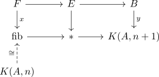

transgressive pairs and fiber sequences
Proposition
Let $F \rightarrow E \rightarrow B$ be fiber sequences where $B,E$ are connected anima where $\pi_*(B)$ acts trivially on $H^*(F,-)$. Then a pair $(x,y)$ is a transgressive pair if and only if it participates in a map of fiber sequences

where the identification $K(A,n) \cong \mathrm{fib}$ follows from the freudenthal map $\pi_n(\mathrm{fib}) \rightarrow \pi_{n+1}(K(A,n)) \rightarrow A$ since Eilenberg-MacLane spaces come equipped with chosen identifcations $\pi_k(K(A,k)) \cong A$
Proof
1) $\implies$ 2)
Follows as
Here the $E_{\infty}$ page must be trivial, so under the so the induced map of spectral sequences induces a map
2) $\implies$ 1)
Let $(x,y)$ be a transgressive pair. Then $[y] = 0 \in E_{\infty}^{n+1,0}$ since $x$ maps to $y$.
In particular under the